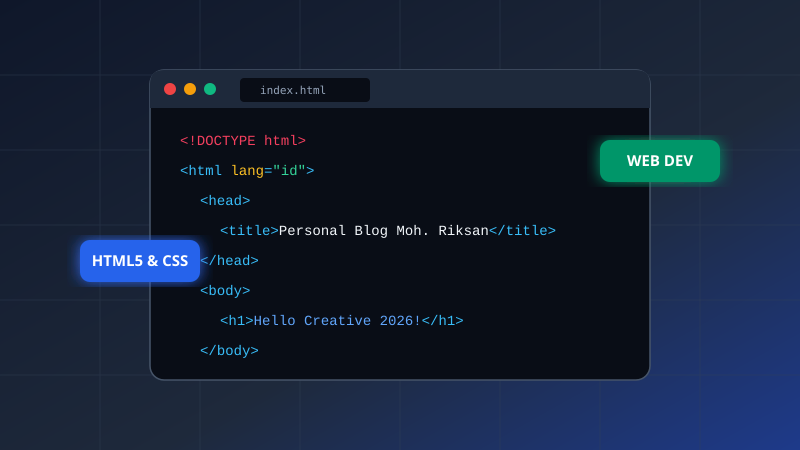

Mengenal Fondasi Web Modern: Memahami Struktur HTML5 & Desain Responsif CSS3
Membangun website yang baik bukan sekadar tampilan yang menarik, melainkan bagaimana menyusun struktur tag semantik yang aksesibel, ramah SEO, dan beradaptasi sempurna di berbagai ukuran layar perangkat mobile maupun desktop.